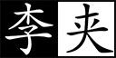

释厄”二字，着眼。不能释厄，不如不读《西游》。
释厄”二字，着眼。不能释厄，不如不读《西游》。 要释厄，必须成仙成佛；要成仙成佛，必须看《西游》，可谓妙言不烦。
要释厄，必须成仙成佛；要成仙成佛，必须看《西游》，可谓妙言不烦。李本总批：读《西游记》者，不知作者宗旨，定作戏论。余为一一拈出，庶几不埋没了作者之意。即如第一回，有无限妙处。若得其意，胜如罄翻一大藏了也。篇中云：“《释厄传》”，见此书读之，可释厄也。若读了《西游》，厄仍不释，却不辜负了《西游记》么？何以言释厄？只是能解脱便是。又曰：“高登王位，将‘石’字儿隐了。”盖猴言心之动也，石言心之刚也。心不刚，斩世缘不断，不可以入道。入道之初，用得刚字着，故显个“石”字。心终刚，入道味不深，不可以得道。得道之后，用“刚”字不着，故隐了“石”字。大有微意，何可埋没。又：“不入飞鸟之丛，不从走兽之类。”见得人不为圣贤，即为禽兽。今既登王入圣，便不为禽兽了，所以不入飞鸟之丛，不从走兽之类也。人何可不为圣贤，而甘为禽兽乎？又曰：“子者，儿男也；系者，婴细也。”正合婴儿之本论。”即是《庄子》“为婴儿”，《孟子》“不失赤子之心”之意。若如“佛与仙与神圣三者，躲过轮回。”又曰：“世人都是为名为利之徒，更无一个为身命者。”已是明白说了也，余不必多为注脚，读者须自知之。
澹漪子曰：《西游记》一书，仙佛同源之书也。何以知之？曰即则其书知之。彼一百回中，自取经以至正果，首尾皆佛家之事，而其间心猿意马，木母金公，婴儿姹女，夹脊双关等类，又无一非玄门妙谛，岂非仙佛合一者乎？大抵老释原无二遭，世尊曾育过去五百世，作忍辱仙人。而紫阳真人亦言，如能忘机息虑，即与二乘坐掸相同。是言仙不能离佛，言佛不能离仙也。今观书中开卷即言心猿求仙学道，而所拜之仙，乃名须菩提祖师。按，须菩提为如来大弟子，神仙中初无此名号，即此可见仙即是佛，业已显然明白。而仙佛之道，又总不离乎一心，此心果能了悟，则万法归一，亦万法皆空，故未有悟能、悟净，而先有悟空，所谓成佛作祖，皆在乎此。此全部《西游》之大旨也。世人未能参透此旨，请勿浪读《西游》。
又曰：自有天地，便有阴阳五行，此阴阳五行，不但诸人离他不得，即仙佛亦离他不得。然阴阳本无形象，总寄于五行之中。五行有内有外：在外者，凡天地间一切耳闻目见之属皆是；在内者，不可见，不可闻，各藏于人之身中，在各人自修自炼，道家所谓攒簇五行．又云颠倒五行。金丹大旨，其妙处止可心悟，而不可言传。然人心妄念纷纷，何从收摄，所以篇中特揭出云，五行山下定心猿。以见心不可定，仍须以五行定之。盖心犹火也，不丽于木，则丽于空，火无一刻而不燃，而猿又世间跳跃好动之物，故以为人心之比。铵，此书中师徒四众，并马而五，已明明列为五项矣。若以五项配五行，则心猿主心，行者自应属火无疑。而传中屡以木母、金公，分指能、净，则八戒应屑木，沙僧应属金矣。独三藏、龙马，未有专属，面五行中偏少水、土二位，宁免缺陷？愚谓土为万物之母，三藏既称师父，居四众之中央，理应属土；龙马生于海，起于涧，理应属水。如是庶五行和合，不致偏枯乎！若夫心猿应为火，而传中成又指为金，（如三十八回金木参玄，四十七回金木垂慈，八十六回金公施法，是也。）沙僧本配金，而传中或又指为土，（如八十八回心猿水土授门人，八十九回金水土计闹豹头山，是也。）似属矛盾。然五行原大段剖析不得，分之则五，合之则一，且一行中亦自具五行，如土本生金，而土中何尝无木，何尝无水，无火，推此而论，莫不肯然。由此言之，行者何必不配金，沙僧何必不配土，况此书乃证道借喻，数人姓名原属乌有子虚，是何人真见唐僧取经，实实有八戒挑担，沙僧牵马乎？若必如此看《西游记》，又何异刻舟求剑，胶柱鼓瑟，向痴人前说梦乎？此一部人头脑，聊向第一回拈出发明之。
又曰：开口说个《西游释厄传》，厄者何？即后之种种魔难是？释厄者何？即后之脱壳成真是。明明自诠自解，无烦注脚。但人知为释厄传，而不知为证道书。证道而不能释厄，所证何道？释厄而不能证道，又何贵乎释厄也。要知释厄即是证道，证道即是释厄，原是一部《西游》，莫作两部看。
篇中已明言仙、佛、神圣三者，躲过轮回，不伏阎王老子管矣。而南赡部洲之人，终日摇摇摆摆，争名夺利，不顾身命，必欲向阎王老子殿前，自家投到而后已。鸣呼！此其所以为南赡部洲也欤！
古月老阴，不能化育；子系细男，正合婴儿。如此妙论，天然吻合，金丹大旨，跃跃现前。即使三教圣人撞钟擂鼓，登坛说法数十年，不过尔尔。而世人扰只作稗史小说，草草看过，无乃以《西游》为猢狲演义耶！
诗曰：
混沌未分天地乱，茫茫渺渺无人见。
自从盘古破鸿蒙，开辟从兹清浊辨。
覆载群生仰至仁，发明万物皆成善。
欲知造化会元功，须看西游释厄传。
释厄”二字，着眼。不能释厄，不如不读《西游》。要释厄，必须成仙成佛；要成仙成佛，必须看《西游》，可谓妙言不烦。
盖闻天地之数，起得直如此冠冕，竟以一篇大文字论冒，从来小说中有此否？有十二万九千六百岁为一元。将一元分为十二会，乃子、丑、寅、卯、辰、巳、午、未、申、酉、戌、亥之十二支也。每会该一万八百岁。且就一日而论：子时得阳气，而丑则鸡鸣；寅不通光，而卯则日出；辰时食后，而巳则挨排；日午天中，而未则西蹉；申时晡而日落酉；戌黄昏而人定亥。譬于大数，若到戌会之终，则天地昏蒙而万物否矣。再去五千四百岁，交亥会之初，则当黑暗，而两间人物俱无矣，故曰混沌。又五千四百岁，亥会将终，贞下起元，近子之会，而复逐渐开明。说得明白。邵康节曰：“冬至子之半，天心无改移。一阳初动处，万物未生时。”到此，天始有根。天根，妙。再五千四百岁，正当子会，轻清上腾，有日，有月，有星，有辰。日、月、星、辰，谓之四象。故曰，天开于子。又经五千四百岁，子会将终，近丑之会，而逐渐坚实。从大道理说起，是会白嚼舌者。易曰：“大哉乾元！至哉坤元！万物资生，乃顺承天。”至此，地始凝结。再五千四百岁，正当丑会，重浊下凝，有水，有火，有山，有石，有土。水、火、山、石、土谓之五形。四象五行，不必一一与性理相合，而信手拈来，自有奇数。故曰，地辟于丑。又经五千四百岁，丑会终而寅会之初，发生万物。历曰：“天气下降，地气上升；天地交合，群物皆生。”至此，天清地爽，阴阳交合。再五千四百岁，正当寅会，生人，生兽，生禽，正谓天地人，三才定位。故曰，人生于寅。
感盘古开辟，感的妙，不知何以报之。三皇治世，五帝定伦，世界之间，遂分为四大部洲：曰东胜神洲，曰西牛贺洲，曰南赡部洲，曰北俱芦洲。这部书单表东胜神洲。海外有一国土，名曰傲来国。国近大海，海中有一座山，唤为花果山。三洲皆有国土，独言东海之国，东方属木，而花果皆由木产，木能生火，岂不信然！此山乃十洲之祖脉，三岛之来龙，自开清浊而立，鸿蒙判后而成。真个好山！有词赋为证。赋曰：
势镇汪洋，威宁瑶海。势镇汪洋，潮涌银山鱼入穴；威宁瑶海，波翻雪浪蜃离渊。木火方隅高积土，东海之处耸崇巅。丹崖怪石，削壁奇峰。丹崖上，彩凤双鸣；削壁前，麒麟独卧。凡《西游》诗赋，只要好听，原只为（口）说而设，若以文理求之，则腐矣。峰头时听锦鸡鸣，石窟每观龙出入。林中有寿鹿仙狐，树上有灵禽玄鹤。瑶草奇花不谢，青松翠柏长春。仙桃常结果，修竹每留云。一条涧壑藤萝密，四面原堤草色新。正是百川会处擎天柱，万劫无移大地根。
那座山，正当顶上，有一块仙石。其石有三丈六尺五寸高，有二丈四尺围圆。三丈六尺五寸高，按周天三百六十五度；二丈四尺围圆，按政历二十四气。上有九窍八孔，按九宫八卦。此说心之始也，勿论说猴。不过只是说心耳，却铺排得如许陆离光怪，煞是奇肆。 ○此时心之灵通。四面更无树木遮阴，左右倒有芝兰相衬。盖自开辟以来，每受天真地秀，日精月华，感之既久，遂有灵通之意。内育仙胞，一日迸裂，产一石卵，似圆球样大。此是心之形状。因见风，化作一个石猴，心字出现。五官俱备，四肢皆全。便就学爬学走，拜了四方。目运两道金光，此时火中真金，不笔寻常铅汞。射冲斗府。惊动高天上圣大慈仁者玉皇大天尊玄穹高上帝，驾座金阙云宫灵霄宝殿，聚集仙卿，见有金光焰焰，即命千里眼、顺风耳从来无观心听心之法，庶乎天人能之？开南天门观看。二将果奉旨出门外，看的真，听的明。须臾回报道：“臣奉旨观听金光之处，乃东胜神洲海东傲来小国之界，有一座花果山，山上有一仙石，石产一卵，见风化一石猴，在那里拜四方，眼运金光，着眼。射冲斗府。如今服饵水食，金光将潜息矣。”水火相见，大丹自成，何用金光！玉帝垂赐恩慈曰：“下方之物，乃天地精华所生，不足为异。”
那猴在山中，却会行走跳跃，食草木，饮涧泉，采山花，觅树果；与狼虫为伴，虎豹为群，獐鹿为友，猕猿为亲；夜宿石崖之下，朝游峰洞之中。真是“山中无甲子，寒尽不知年。”一朝天气炎热，与群猴避暑，都在松阴之下顽耍。你看他一个个：
跳树攀枝，采花觅果；抛弹子，邷么儿；跑沙窝，砌宝塔；赶蜻蜓，扑𧈢蜡；参老天，拜菩萨；扯葛藤，编草帓；捉虱子，咬又掐；理毛衣，剔指甲；画出老猴。挨的挨，擦的擦；推的推，压的压；扯的扯，拉的拉，青松林下任他顽，绿水涧边随洗濯。
一群猴子耍了一会，却去那山涧中洗澡。见那股涧水奔流，真个似滚瓜涌溅。古云：“禽有禽言，兽有兽语。”众猴都道：“这股水不知是那里的水。我们今日赶闲无事，顺涧边往上溜头寻看源流，耍子去耶！”喊一声，都拖男挈女，呼弟呼兄，一齐跑来，顺涧爬山，直至源流之处，乃是一股瀑布飞泉。但见那：
一派白虹起，千寻雪浪飞；
海风吹不断，江月照还依。
冷气分青嶂，馀流润翠微；
潺湲名瀑布，真似挂帘帷。
众猴拍手称扬道：“好水！好水！原来此处远通山脚之下，直接大海之波。”又道：“那一个有本事的，钻进去寻个源头出来，着眼。今世上那一个有本事钻进去讨出个源头来？可叹！可叹！不伤身体者，我等即拜他为王。”连呼了三声，忽见丛杂中跳出一名石猴，应声高叫道：“我进去！我进去！”好猴！也是他：
今日芳名显，时来大运通；
有缘居此地，天遣入仙宫。
你看他瞑目蹲身，将身一纵，径跳入瀑布泉中，忽睁睛抬头观看，那里边却无水无波，明明朗朗的一架桥梁。他住了身，定了神，仔细再看，原来是座铁板桥。桥下之水，冲贯于石窍之间，倒挂流出去，遮闭了桥门。却又欠身上桥头，再走再看，却似有人家住处一般，真个好所在。但见那：
翠藓堆蓝，白云浮玉，光摇片片烟霞。虚窗静室，滑凳板生花。乳窟龙珠倚挂，萦回满地奇葩。锅灶傍崖有火迹，樽罍靠案见肴渣。石座石床真可爱，石盆石碗更堪夸。又见那一竿两竿修竹，三点五点梅花。几树青松常带雨，浑然象个人家。
看罢多时，跳过桥中间，左右观看，只见正当中有一石碣。碣上有一行楷书大字，镌着“花果山福地，水帘洞洞天。”人人俱有此洞天福地，惜不曾看见耳！花果者，木也；水帘者，水也；铁板桥者，金也；山石福地则皆土也；心猿似火居其中，可谓五行具备，故曰天造地设的家当。即此便是金丹大旨。石猴喜不自胜，急抽身往外便走，复瞑目蹲身，跳出水外，打了两个呵呵道：“大造化！大造化！”众猴把他围住，问道：“里面怎么样？水有多深？”石猴道：“没水！没水！原来是一座铁板桥。桥那边是一座天造地设的家当。”那个没个家当？只是不能受用。众猴道：“怎见得是个家当？”石猴笑道：“这股水乃是桥下冲贯石窍，倒挂下来遮闭门户的。桥边有花有树，乃是一座石房。房内有石锅、石灶、石碗、石盆、石床、石凳。中间一块石碣上，镌着‘花果山福地，水帘洞洞天。’真个是我们安身之处。里面且是宽阔，容得千百口老小，我们都进去住也，省得受老天之气。省得受老天之气，如此说话，谁说得出？这里边：
刮风有处躲，下雨好存身。
霜雪全无惧，雷声永不闻。
烟霞常照耀，祥瑞每蒸熏。
松竹年年秀，奇花日日新。”
众猴听得，个个欢喜，都道：“你还先走，带我们进去，进去！”石猴却又瞑目蹲身，往里一跳，叫道：“都随我进来！进来！”那些猴有胆大的，都跳进去了；胆小的，一个个伸头缩颈，抓耳挠腮，大声叫喊，缠一会，也都进去了。跳过桥头，一个个抢盆夺碗，占灶争床，搬过来，移过去，正是猴性顽劣，再无一个宁时，着眼。只搬得力倦神疲方止。石猿端坐上面道：“列位呵，‘人而无信，不知其可。’老猴也曾读《论语》？你们才说有本事进得来，出得去，不伤身体者，就拜他为王。我如今进来又出去，出去又进来，寻了这一个洞天与列位安眠稳睡，各享成家之福，何不拜我为王？”众猴听说，即拱伏无违。一个个序齿排班，朝上礼拜，都称“千岁大王”。自此，石猴高登王位，将“石”字儿隐了，着眼。石中有火，故必须隐了。火石既隐，则木火长生矣。遂称美猴王。有诗为证。诗曰：假姓配丹，有形无相，内圣外王，三教宗旨和盘托出，真是金丹妙谛。
三阳交泰产群生，仙石胞含日月精。
借卵化猴完大道，假他名姓配丹成。
内观不识因无相，外合明知作有形。
历代人人皆属此，称王称圣任纵横。
此物原是内王外圣的，故有美猴王、齐天大圣之号。着眼！着眼！
美猴王领一群猿猴、猕猴、马猴等，分派了君臣佐使，朝游花果山，暮宿水帘洞，合契同情，不入飞鸟之丛，不从走兽之类，独自为王，不胜欢乐。是以：
春采百花为饮食，夏寻诸果作生涯。
秋收芋栗延时节，冬觅黄精度岁华。
美猴王享乐天真，何期有三五百载。一日，与群猴喜宴之间，忽然忧恼，堕下泪来。众猴慌忙罗拜道：“大王何为烦恼？”猴王道：“我虽在欢喜之时，却有一点儿远虑，故此烦恼。”众猴又笑道：“大王好不知足！我等日日欢会，在仙山福地，古洞神州，不伏麒麟辖，不伏凤凰管，又不伏人间王位所拘束，自由自在，乃无量之福，为何远虑而忧也？”猴王道：“今日虽不归人王法律，不惧禽兽威服，将来年老血衰，暗中有阎王老子管着，一旦身亡，可不枉生世界之中，不得久住天人之内？”众猴闻此言，一个个掩面悲啼，俱以无常为虑。
只见那班部中，忽跳出一个通背猿猴，厉声高叫道：“大王若是道心远虑，真所谓道心开发也！如今五虫之内，惟有三等名色，不伏阎王老子所管。”猴王道：“你知那三等人？”猿猴道：“乃是佛与仙与神圣三者，躲过轮回，不生不灭，与天地山川齐寿。”猴王道：“此三者居于何所？”猿猴道：“他只在阎浮世界之中，古洞仙山之内。”猴王闻之，满心欢喜，道：“我明日就辞汝等下山，云游海角，远涉天涯，务必访此三者，学一个不老长生，常躲过阎君之难。”噫！这句话，顿教跳出轮回网，致使齐天大圣成。众猴鼓掌称扬，都道：“善哉！善哉！我等明日越岭登山，广寻些果品，大设筵宴送大王也。”
次日，众猴果去采仙桃，摘异果，刨山药，劚黄精，芝兰香蕙，瑶草奇花，般般件件，整整齐齐，摆开石凳石桌，排列仙酒仙肴。但见那：
金丸珠弹，红纵黄肥。金丸珠弹腊樱桃，色真甘美；红绽黄肥熟梅子，味果香酸。鲜龙眼，肉甜皮薄；火荔枝，核小囊红。林檎碧实连枝献，枇杷缃苞带叶擎。兔头梨子鸡心枣，消渴除烦更解酲。香桃烂杏，美甘甘似玉液琼浆；脆李杨梅，酸荫荫如脂酸膏酪。红囊黑子熟西瓜，四瓣黄皮大柿子。石榴裂破，丹砂粒现火晶珠；芋栗剖开，坚硬肉团金玛瑙。胡桃银杏可传茶，椰子葡萄能做酒。榛松榧柰满盘盛，藕蔗柑橙盈案摆。熟煨山药，烂煮黄精，捣碎茯苓并薏苡，石锅微火漫炊羹。人间纵有珍馐味，怎比山猴乐更宁？
群猴尊美猴王上坐，各依齿肩排于下边，一个个轮流上前，奉酒，奉花，奉果，痛饮了一日。次日，美猴王早起，教：“小的们，替我折些枯松，编作筏子，取个竹竿作篙，收拾些果品之类，我将去也。”果独自登筏，如此勇决，自然跳出生死。可羡，可法。尽力撑开，只此八字，可想其勇猛精进，谁人不及！飘飘荡荡，径向大海波中，趁天风，来渡南赡部洲地界。这一去，正是那：
天产仙猴道行隆，离山驾筏趁天风。
飘洋过海寻仙道，立志潜心建大功。
有分有缘休俗愿，无忧无虑会元龙。
料应必遇知音者，说破源流万法通。
也是他运至时来，自登木筏之后，连日东南风紧，将他送到西北岸前，乃是南赡部洲地界。持篙试水，偶得浅水，弃了筏子，跳上岸来，只见海边有人捕鱼、打雁、挖蛤、淘盐。他走近前，弄个把戏，妆个𡤫虎，吓得那些人丢筐弃网，四散奔跑。将那跑不动的拿住一个，剥了他衣裳，也学人穿在身上，摇摇摆摆，穿洲道府，在市廛中，学人礼，学人话。朝餐夜宿，一心里访问佛仙神圣之道，觅个长生不老之方。见世人都是为名为利之徒，更无一个为身命者。真，真。说的南瞻部洲如此可怜。苦恼苦恼。正是那：
争名夺利几时休？早起迟眠不自由！
世人可惜，世人可叹，不及那猴王多矣。
骑着驴骡思骏马，官居宰相望王侯。
只愁衣食耽劳碌，何怕阎君就取勾？
继子荫孙图富贵，更无一个肯回头！
猴王参访仙道，无缘得遇。在于南赡部洲，串长城，游小县，不觉八九年馀。忽行至西洋大海，他想着海外必有神仙。独自个依前作筏，又飘过西海，直至西牛贺洲地界。登岸遍访多时，忽见一座高山秀丽，林麓幽深。他也不怕狼虫，不惧虎豹，登山顶上观看。果是好山：
千峰排戟，万仞开屏。日映岚光轻锁翠，雨收黛色冷含青。枯藤缠老树，古渡界幽程。奇花瑞草，修竹乔松。修竹乔松，万载常青欺福地；奇花瑞草，四时不谢赛蓬瀛。幽鸟啼声近，源泉响溜清。重重谷壑芝兰绕，处处巉崖苔藓生。起伏峦头龙脉好，必有高人隐姓名。
正观看间，忽闻得林深之处，有人言语，急忙趋步，穿入林中，侧耳而听，原来是歌唱之声。歌曰：
观棋柯烂，伐木丁丁，云边谷口徐行。卖薪沽酒，狂笑自陶情。苍迳秋高，对月枕松根，一觉天明。认旧林，登崖过岭，持斧断枯藤。收来成一担，行歌市上，易米三升。更无些子争竞，时价平平。不会机谋巧算，没荣辱，恬淡延生。好快活！相逢处，非仙即道，静坐讲《黄庭》。
美猴王听得此言，满心欢喜道：“神仙原来藏在这里！”急忙跳入里面，仔细再看，乃是一个樵子，在那里举斧砍柴。此人确是神仙。但看他打扮非常：
头上戴箬笠，乃是新笋初脱之箨。身上穿布衣，乃是木绵捻就之纱。腰间系环绦，乃是老蚕口吐之丝。足下踏草履，乃是枯莎搓就之爽。手执衠钢斧，担挽火麻绳。扳松劈枯树，争似此樵能！
猴王近前叫道：“老神仙！弟子起手。”那樵汉慌忙丢了斧，转身答礼道：“不当人！不当人！我拙汉衣食不全，怎敢当‘神仙’二字？”猴王道：“你不是神仙，如何说出神仙的话来？”樵夫道：“我说甚么神仙话？”猴王道：“我才来至林边，只听的你说：‘相逢处非仙即道，静坐讲《黄庭》。’《黄庭》乃道德真言，非神仙而何？”樵夫笑道：“实不瞒你说，这个词名做《满庭芳》，乃一神仙教我的。那神仙与我舍下相邻。他见我家事劳苦，日常烦恼，教我遇烦恼时，即把这词儿念念。一则散心，二则解困。我才有些不足处思虑，故此念念。不期被你听了。”猴王道：“你家既与神仙相邻，何不从他修行？学得个不老之方？却不是好？”樵夫道：“我一生命苦，自幼蒙父母养育至八九岁，才知人事，不幸父丧，母亲居孀。再无兄弟姊妹，只我一人，没奈何，早晚侍奉。如今母老，一发不敢抛离。却又田园荒芜，衣食不足，只得斫两束柴薪，挑向市廛之间，货几文钱，籴几升米，自炊自造，安排些茶饭，供养老母，所以不能修行。”
猴王道：“据你说起来，乃是一个行孝的君子， 正是神仙。向后必有好处。但望你指与我那神仙住处，却好拜访去也。”樵夫道：“不远，不远。此山叫做灵台方寸山。一部《西游》，此是宗旨。灵台方寸，心也。山中有座斜月三星洞。斜月象一勾，三星象三点，也是心。言学仙不必在远，只在此心。那洞中有一个神仙，称名须菩提祖师。此即《金刚经》中之须菩提也。神仙、祖师合而为一，方是仙、佛同源。那祖师出去的徒弟，也不计其数，见今还有三四十人从他修行。你顺那条小路儿，向南行南方，火也。七八里远近，即是他家了。”猴王用手扯住樵夫道：“老兄，你便同我去去。若还得了好处，决不忘你指引之恩。”痴猴。樵夫道：“你这汉子，甚不通变。我方才这般与你说了，你还不省？假若我与你去了，却不误了我的生意？老母何人奉养？我要斫柴，你自去，自去。”
猴王听说，只得相辞。出深林，找上路径，过一山坡，约有七八里远，果然望见一座洞府。挺身观看，真好去处！但见：
烟霞散彩，日月摇光。千株老柏，万节修篁。千株老柏，带雨半空青冉冉；万节修篁，含烟一壑色苍苍。门外奇花布锦，桥边瑶草喷香。此是什么去处？人须自想。石崖突兀青苔润，悬壁高张翠藓长。时闻仙鹤唳，每见凤凰翔。仙鹤唳时，声振九皋霄汉远；凤凰翔起，翎毛五色彩云光。玄猿白鹿随隐见，金狮玉象任行藏。细观灵福地，真个赛天堂！
又见那洞门紧闭，静悄悄杳无人迹。忽回头，见崖头立一石碑，约有三丈馀高、八尺馀阔，上有一行十个大字，乃是“灵台方寸山，斜月三星洞”。美猴王十分欢喜道：“此间人果是朴实。果有此山此洞。”看勾多时，不敢敲门。且去跳上松枝梢头，摘松子吃了顽耍。
少顷间，只听得呀的一声，洞门开处，里面走出一个仙童，此童子是什么人？自思之。真个丰姿英伟，像貌清奇，比寻常俗子不同。但见他：
髽髻双丝绾，宽袍两袖风。
貌和身自别，心与相俱空。
物外长年客，山中永寿童。
一尘全不染，甲子任翻腾。
那童子出得门来，高叫道：“甚么人在此搔扰？”猴王扑的跳下树来，上前躬身道：“仙童，我是个访道学仙之弟子，更不敢在此搔扰。”仙童笑道：“你是个访道的么？”猴王道：“是。”童子道：“我家师父，正才下榻，登坛讲道。还未说出原由，就教我出来开门。说：‘外面有个修行的来了，可去接待接待。’想必就是你了？”猴王笑道：“是我，是我。”好担当。童子道：“你跟我进来。”
这猴王整衣端肃，随童子径入洞天深处观看：一层层深阁琼楼，一进进珠宫贝阙，说不尽那静室幽居，直至瑶台之下。见那菩提祖师端坐在台上，两边有三十个小仙侍立台下。果然是：
大觉金仙没垢姿，西方妙相祖菩提；
不生不灭三三行，全气全神万万慈。
空寂自然随变化，真如本性任为之；
着眼。
与天同寿庄严体，历劫明心大法师。
美猴王一见，倒身下拜，磕头不计其数，口中只道：“师父！师父！我弟子志心朝礼！志心朝礼！”祖师道：“你是那方人氏？且说个乡贯姓名明白，再拜。”猴王道：“弟子乃东胜神洲傲来国花果山水帘洞人氏。”祖师喝令：“赶出去！他本是个撒诈捣虚之徒，那里修甚么道果！”猴王慌忙磕头不住道：“弟子是老实之言，决无虚诈。”祖师道：“你既老实，怎么说东胜神洲？那去处到我这里，隔两重大海，一座南赡部洲，如何就得到此？”猴王叩头道：“弟子飘洋过海，登界游方，有十数个年头，方才访到此处。”
祖师道：“既是逐渐行来的也罢。你姓甚么？”猴王又道：“我无性。人若骂我，我也不恼；若打我，我也不嗔，只是陪个礼儿就罢了。一生无性。”妙。祖师道：“不是这个性。好提醒。你父母原来姓甚么？”猴王道：“我也无父母。”着眼。无父母，就是自家做祖了。更妙。祖师道：“既无父母，想是树上生的？”猴王道：“我虽不是树上生，却是石里长的。我只记得花果山上有一块仙石，其年石破，我便生也。”祖师闻言，暗喜道：“这等说，却是个天地生成的。你起来走走我看。”猴王纵身跳起，拐呀拐的走了两遍。祖师笑道：“你身躯虽是鄙陋，却像个食松果的猢狲。我与你就身上取个姓氏，意思教你姓‘猢’。猢字去了个兽傍，乃是古月。古者，老也；月者，阴也。老阴不能化育，大道理。只是如今姓胡的，怎么处？教你姓‘狲’倒好。狲字去了兽傍，乃是个子系。子者，儿男也；系者，婴细也。正合婴儿之本论。教你姓‘孙’罢。”可谓信手拈来，头头是道，妙不可言。猴王听说，满心欢喜，朝上叩头道：“好！好！好！今日方知姓也。万望师父慈悲！既然有姓，再乞赐个名字，却好呼唤。”祖师道：“我门中有十二个字，分派起名到你乃第十辈之小徒矣。”猴王道：“那十二个字？”祖师道：“乃广、大、智、慧、真、如、性、海、颖、悟、圆、觉十二字。排到你，正当‘悟’字。与你起个法名叫做‘孙悟空’好么？”猴王笑道：“好！好！好！自今就叫做孙悟空也！”正是：
鸿蒙初辟原无姓，打破顽空须悟空。
是仙是佛，二语皆可参证。
毕竟不知向后修些甚么道果，且听下回分解。
悟元子曰：人身难得，无常迅速，生生死死，轮回不息；一失人身，永久恶趣，可惧可怕。举世之人，生不知来处，死不知去处，醉生梦死，碌碌一世；入于苦海而罔觉，陷诸火坑而不知，以苦为乐，以假为真。殊不知一切尘缘世事，俱是戕性之刀斧；恩爱牵缠，无非丧命之井坑。他时阎王老子打算饭钱，当得甚事？纵有金穴银山，带不得些个；孝子贤孙，替不得分毫。只落的罪孽随身，万般虚妄。所以历代丹经，群真道书，传流后世，使人寻文解义，脱火坑，出苦海，弃妄存真，以保性命。然而书愈多，人愈惑，其辞意幽深，终难窥其底蕴。
长春真人度世心切，作《西游记》，去譬喻而就实着，略文章而来常言，特欲人人成仙，个个作佛耳。观於部首一诗，末联云：“欲知造化会元功，须看《西游释厄传》”，而知真人一片度世之婆心，不为不切矣。盖《西游》之道，金丹之道，造化之道，’无非元会之道。其中所言内阴阳、外阴阳、顺五行、逆五行、火候药物、天道人事，无不悉具。若有明眼者，悟得唐僧四众，即阴阳五行之道；袈裟、锡杖、宝杖、金箍棒、九齿钯，即元会之功；千魔百障、山川国土，即修真之厄；通关牒文、九颗宝英三藏真经，即释厄之印证；可以脱生死、出轮回、超尘世、入圣基，能修无量寿身，能成金刚不坏，非释厄而何？后之迷徒，多不得正解，旁猜私议，邪说淫辞，紊乱仙经，不特不能释厄，而且有以滋厄，大非当年作者之本意，岂不可伤可叹？
予自得龛谷、仙留之旨，捧读之下，多有受益，始知此书为天神所密，举世道人，无能达此，数百年来，知音者惟悟一子陈公一人而已。予因追仙翁释厄之心，仿陈公《真诠》之意，不揣愚鲁，每回加一注脚，共诸同人，早自释厄，是所本愿。
如首回大书特书曰：“灵根育孕源流出，心性修持大道生”，可谓拔天根而凿理窟，何等简当？何等显亮？人或以心意猜《西游》，不但不识灵根，而并不识心意。殊不知灵根是灵根，心意是心意。所言“心性修持”者，特用心性修持灵根以生道，非修心性即是道。此二句不特为首回之提纲，亦即为全部之要旨，读者若能将此灵根心性，辨得分明，有会于心，则要旨已得，其余九十九回，可以循文搜意，而见其肯綮矣。
试申首回之义。夫所谓灵根者，乃先天虚无之一气，即生天、生地、生人、生物之祖气；儒曰太极，释曰圆觉，道曰金丹，虽名不一，无非形容此一气也。真人下笔显道，首叙天地之数，一元十二会，混饨初分，天开于子，地辟于丑，人生于寅，以明天地人三才，皆自一气而生也。三才既自一气而生，则天得一以清，地得一以宁，人得一以灵。是人之灵根，即先天虚无之一气。这个气，浑浑沦沦，虚圆不测，寂然不动，感而遂通，具众理而应万事，故谓灵根。此灵根也，以气言之，为浩然正气；以德言之，为秉彝之良。此气此德，非色非空，不有不无，恍恍惚惚，杳杳冥冥，至无而含至有，至虚而含至实，故生于东胜神洲做来国花果山也。
“东”为生气之方，“胜”者生气之旺象，“神”者妙万物而言，即一而神，所谓神州赤县者是也。“傲来国”者，无所从来，真空之谓，即生气一神之本体。“花果山”者，花属阴，果属阳，开花结果，阴阳兼该，妙有之谓，即两而化，乃生气一神之妙用。一神者，“无名天地之始”；两化者，“有名万物之母”。“花果山在大海中”者，海为众水朝宗之处，象一气为众妙之门，无德不具，无理不备，为成圣、成佛、成仙之根本，故为“十洲之祖脉，三岛之来龙”也。
“山顶上有一块仙石”者，一气浑然，太极之象也。“按周天三百六十五度”，“二十四气”，“九宫八卦”，是真空而含妙有，其为物不二，生物不测，先天中之先天也；“感日精月华，内育仙胎”，是妙有而藏真空，阴阳交感，其中又生一气，后天中之先天也。
“产一石卵，似圆球样大，因见风化作一个石猴”者，石为土之精，为坚固赖久之物，卵球为至圆无亏之物；猴属申，申为庚金，金亦为坚固不坏之物，俱状先天灵根，其性刚健，圆成无碍，本于一气，非一切后天滓质之物可比。“五官俱备，四肢皆全，拜了四方，目运两道金光，射冲斗府”者，灵根真空妙有，阴阳五行四象之气，无不俱备。其光通天彻地，即有天地造化之能，已与天地合而为一矣。
“下方之物，乃天地精华所生，不足为异”者，盖灵根在人身中，人人具足，个个圆成，处圣不增，处凡不减，但“百姓日用而不知”耳。“服饵水食，金光潜息”者，先天人于后天，知识开而灵根昧，真变为假，于是邪正不分，理欲交杂，鸟兽同居矣。即孟子所谓“人之所以异于禽兽几希，庶民去之，君子存之者”是也。然虽先天灵根为后天所昧，而犹未尽泯于后天，是在有志者，善为钻研出道之源流，返本还元耳。
灵极具有先天真一之气，又名先天真一之水，此水顺则生人、生物，道则为圣、为仙。“水帘洞铁板桥下之水，冲贯于石窍之间，倒挂流出去，遮闭桥门”。是逆则生仙之道，但人只知顺行，不知逆运，更明明朗朗一座铁板稳妥之桥，而人当面不识也。“却似人家住处一般，好个所在。”即《悟真》所谓“此般至宝家家有，自是愚人识不全”也。若有人实见的此宝，即知是仙佛洞天福地，内有大造化，顿悟圆通，天造地设家当现在，如同本得，不予他求，可以安身立命，造化由我，省得受老天之气矣。
“有本事的进得来，出得去，不伤身体者，就拜他为王。”即《悟真》所云：“悟即刹那成佛，迷则万劫沦流。若能一念契真修，灭尽恒沙罪垢”；亦即佛云：“否为汝保任此事，决定成就”之义。“称千岁，称美猴王”，即《语真篇》所云：“劝君穷取生身处，返本还元是药王”也。
诗曰：“三阳开泰产群生，仙石包含日月精”者，言地天交《泰》，和气熏蒸，万物皆得以成形，形中又含始气，各具一太极，莫不有先天真一之气存焉。“借卵化猴完大道，假他名姓配丹成”者，道本无名，强名曰道；道本无言，言以显道。故借石猴名姓，配合金丹之道，使人借此悟彼，追求灵根之实迹耳。“内观不识因无相”者，灵根真空，而不识不知也。“外合明知作有形”者，灵根妙有，而顺帝之则也。“历代人人皆属此”，即前所云“人人具足，个个圆成”也。“称王称圣任纵横”者，愚人以此杀身，至人以此成道，若有知者，逆而修之，与天地争权，与日月争光，“纵横逆顺莫遮拦，我命由我不由天”矣。此“灵根育孕源流出”之妙旨，而无如迷人于此灵根，不知寻求，虽有天造地设的家当，不能承受，一旦室空囊倾，阎王老子不肯留情，可不枉生世界之中？说到此处，真足令流落他乡之子，猛整归鞭；飘荡苦海之客，早醒回头耳。
猴王闻仙佛神圣不生不灭之言，欲下山学不老长生之术，此即道心发现，灵很不昧之机。“顿叫跳出轮回网，致使齐天大成。”皆此道心一现致之也。然他道必自人道始，倘人道未尽，仙道远矣。人生字内，身虽人形，俱皆兽心；未修仙道，先修人道；下学上达，循序而进，自入佳境。猴王过大海到南赡部洲，学人穿衣，学人礼，学人话，总以见去兽地而学人道也；学成人道，仙道可望。何以南赡部洲更无一个为身命者，岂真南赡部洲无神仙哉？盖有说也。能尽人道，是作佛成仙之阶梯，而非作佛成仙之实迹。他佛者一尘不染，万缘俱空，人道中未免犹为衣食劳碌，富贵萦心，不能出乎阴阳之外，终为阴阳所规弄，此猴王不得不于西牛贺洲，别求神仙下落矣。神仙之道，金丹之道也。金丹之道，万劫一传，非大忠大孝之人不能得，非大忠大孝之人不可传。行孝君子，与神仙为邻，实有可据。樵子道“不远！不远！”犹言道不远人也。其所远者，人之为道而远人耳。
“灵台方寸山，斜月三星洞”。“斜月”，一钩“L”；“三星”三点“小”，合而为“心”字。古今多少名人，皆以人心猜之，差之多矣。独悟一子注曰：“以此心为天地之心则可，以此心为人心之心，失之远矣。”此言最为高明，盖此心不着于形象，不落于有无，空空洞洞，最虚最灵，故谓“灵台方寸”；当静极而动，贞下起元，灵光现露，如三日峨眉之月，故谓“斜月三星洞”。曰“山”者，不动不摇也；曰“洞”者，至虚至灵也。这个心，即灵根之光辉；这个光辉，系一点阳刚之正气。故曰：“洞中有一个神仙，称名须善提。”《华严经》云：“菩提心者，名为种子，能生一切诸佛法。”菩提心，即天地之心也，亦名道心。道心为成仙作佛之真种子，为修性立命之正祖宗。故曰“祖师出去的徒弟不计其数也，现今还有三四十人从他修行。”三四为七，“七日来复”之义。
“顺小路儿向南，七八里远近，即是他家了。”小路为《兑》，在西向南为《坤》，三日月出庚方之象；“七八里”者，七八一十五，月光圆满之象。“他家”者，人人也。灵根有昧，陷于后天，间或一现，旋有而旋失，不为我有，如我之物而走于他家，故为他家矣。“静悄悄杏无人迹”，阴静之极，《坤》卦之象；“摘松子顽耍”，静极而动，天心复见之时。童子道：“我师还未说出原因，就叫出来开门。”原因未出，而门早开，虚室生自，迅速之至。又道：“外面有个修行的来了，可以接待，想必就是你了。”噫！此等处不得师传，枉自猜量，修行的自外而来，则内无可知。“可以接待，想必是你”，“认得唤来归舍养”也。猴王笑道：“是我！是我！”此乃口传心受之火候，不知天下修行人，当外面修行的来，肯去接待，认得就是你乎？亦不知认得是你，原来是我乎？
“祖师端坐台上，两边有三十小仙侍立台下。”此正认得是你，原来是我之秘。这个秘，仙翁分明说出，人多不识。祖师端坐台上，即《剥》卦卦爻图略上一阳爻也；两边有三十个小仙，即《剥》之下五阴爻，五六三十也。夫天心未复是你，已复是我；未复者《剥》之上爻，已复者《复》之初爻。欲复天心，须要在《剥》中下功夫。《剥》之上爻辞曰；“硕果不食，君子得舆。”盖顺而止之，不使阴气剥阳于尽，将为返还之本，祖师端坐台上，正得舆顺止之象。
诗曰：“大觉金仙没垢姿”者，脱离群阴，真空之谓也；“西方妙相祖菩提”者，复返正气，妙有之谓也；“不生不灭三三行，全气全神万万慈”者，真空妙有，不生不灭，全气全神，三三行满，体化纯阳，万万功成，德配天地矣；“空寂自然随变化”者，寂然不动，感而遂通也；“真如本性任为之”者，一念纯真，应灵不昧也；“与天同寿庄严体，历劫明心大法师”者，道成之后，为金刚不坏之体，与天齐寿，历劫常存，永为无漏真人。非深明天心之大法师，其孰能与于斯乎？明心之法，全在由《剥》而《复》之功，若不知明心之法，一举一动皆是人心用事。天心不见，便是“小人剥庐”，何能到的与天齐寿庄严之体乎？但此明心大法，人不易知，亦不易行，非可侥幸而就，必须牢把念头，立志长久，期于必得而后已。曰“十数年方到”，曰“既是逐渐来的也罢”，其提醒我后人者，何其切欤！
提纲曰：“心性修持大道生”，盖修持大道，心固不可不明，而性亦不可不见，若不见性，心无所体，不能到真空之地，此性所当急知也。此等语，莫作闲言，大有深意，一切学人，误认气质之性为真性，遂勉强制伏，终归顽空下乘之流。殊不知此乃后天之假性，而非先天之真性。故祖师道：“不是这个性。”真是脑后棒敲，叫人吃惊矣。曰：“我无父母”，曰；“却是天地生成的”，则是秉之天地生成之性为真性；受之父母血气之性，非真性可知矣。真性者，即灵根之继体，空而不空，不空而空。“取个姓氏，叫姓孙”，空而不空也；“起个法名叫悟空”，不空而空也。曰：“好！好！好！今日方知姓”；曰：“好！好！好！自个叫做孙悟空”。知得此性，悟得此空，则一阴一阳之谓道，阴阳不测之谓神。有无一致，色空无碍；至无而含至有，至虚而含至实；“有用用中无用，无功功里施功“；弃后天顽空，而修先天真空；方是广大智慧，真如性海，颖悟圆觉。本立道生，生生不息。虽口有性，其实无性；虽曰悟空，其实不空。故结云：“鸿蒙初辟原无姓，打破顽空须悟空。”
诗曰：
灵根育孕本先天，藏在后天是水铅。
悟得真心明本性，不空不色自方圆。
悟一子曰：此明大道之根源，乃阴阳之祖气，即混元太极之先天，无中生有之真乙。能尽心知性而修持之，便成金身不坏，与天地齐寿也。俗儒下士，识浅学陋，不晓《河》、《洛》无字之真经，未明《周易》、《参同》之妙理；胶执儒书，解悟未及一隅；摈斥《道藏》，搜览亦皆糟粕。所谓醯鸡止知瓮大，夏虫难与语冰者也。予特悯夫有志斯道而未得真诠，既味性命之源流，罔达修持之归要；揭数百年亵视之《西游》，示千万世知音之向往。但惜前人索解纰谬，聋聩已久，不得不逐节剖正，以指迷津。如此回提纲二语，最着意者，在上一句，为作者全部之统要。解者止提「心」字为主，妄揣混注，反昧却大道之根源，是不知道也，并不知心。竟将仙师度世真谛全然遗弃，可借！可叹！
首言“灵根”也者，先天真乙之气也。经曰：“无名，天地之始；有名，万物之母。”又云：“两者同出而异名。”方其无也，真乙之气不可见，故为天地之始。及其有也，真乙之珠现于空虚中，故为万物之母。一气生阴阳，阴阳生四象，四象生五行，五行生万物，俱真乙之气变也。其为气也，立于天地之先，入于天地之内。始自无中生有，复自有中生无。人能得此一气，可以包罗万象，故曰：“得其一，则万事毕矣。”《悟真篇》曰：“道自虚无生一气，便从一气产阴阳，阴阳再合成三体，三体重生万物张。”《易》曰：“天地絪緼，万物化醇。”元始以一粒宝珠证道；灵山会上，龙女献牟尼宝珠证道。三教圣人，无不从此道直探根源，洞明造化。
盖道生一气，一气生形，形中又含始气。故天一生水，水为壬水，壬即真一生物之祖气。壬水长生在申，申者，猴也，故为猴。申金生于土，石者，土之精，气之核，故为石猴。
按“周天三百六十五度”，“二十四气”，“九宫八卦”，即《悟真篇》所云“五行四象全藉上，九宫八卦岂离壬”者是也。乙为花果之木，生于震东阳气始生之地，纳音为海中之金，故在东胜神洲傲来国大海中花果山。此水中之金，即父母未生前先天真乙之真金，故无父母而父天母地，产于石卵，“目运两道金光”也。因服食后天之水，而金光潜息，将渐失其初禀之性矣。以其为水中之金，故居于水帘洞。内有“铁板桥”，分明是天造地设的家当，非人力所能为。此种家当，得之者我，命不由天，不受老天之气者矣。诚天地间至美之大乐王也！故称“美猴王”。
自“盖闻天地之数”至此，总明灵根源流之奥旨，并无“心”字在内。强以形象谬臆，五形妄参，岂非管窥蠡测耶！
仙师用一诗关，扭测到人身上，甚明。云借猴假名，以完配金丹大道之成耳。使历代人人而皆属此之完配，则亦称外王，称内圣，而任其纵横矣，非言心之难制也。下文方说人当体察其妙、尽心知性、勉力修持之为贵也。人身难得，百岁易磋，急宜开发道心，自己勉力。须知仙佛神圣之道，长生不老之方，人人有分。奈何世人都是为名为利之徒，更无一个为身命者，殊可怜悯。故仙师指出一个路头，还向西方访问，直至西牛贺州，讨出一个神仙下落。噫！神仙不择地而生，岂南赡部洲果无，转至西牛贺洲而有耶？仙师立言之意，只要指明南方为火旺之乡，非金生之地；必至西方，乃产真金耳。与全书取经必往西天同一义也。
说出个行孝的君子。学为行仁之本，即与仙神相近，故与为邻。其中又另有妙义。盖神仙之道，以水生金，非以金生水，乃母堕子胎，子报母思之象，同一行孝之道也。
樵夫曰：“不远，不远。此山叫做灵台方寸山，山中有座斜月三星洞，洞中有个神仙，称名须菩提祖师。”菩提，梵语，即华言“正道”也。此处明提“灵台方寸”，一勾三点，读者谓是指“心”字无疑，予亦何能谓其不指是心！噫！误矣。若云是心，以心问心、参禅打座、祛欲循理，便可长生，又何用求师访道、南奔西驰耶！以此心为天地之心则可；以此心为人心之心则失之远矣。
《易》曰：“不远复。”“复其见天地之心乎。」天地之心不可见，因有地、雷。《复》卦为见天地之心，盖静极而动，动而生阳，生生续续，皆因于坤。故《参同》曰：“因母立兆基。”即坤生《复》也。又曰：“六五坤承，结括终始。”温养众子，世为类母，所谓万物之母也。故樵夫云“那祖师出去的徒弟也不计其数”，言万物皆从此出也。又云：“见今还有三四十人从他修行。”其从者为东三西四中十，其祖师则为北一南二，坎离既济，五行攒簇，明矣。又云：“你顺那条小路儿，向南行不远，即是他家了。”由西而向南不远，非坤位乎！《易》曰：“西南得朋，乃以类行。”《悟真》曰“只在西南而本乡”是也。“小路”者，西兑之位也。兑为少阴，故曰小路。“他家”者，即《悟真》所谓“认取他家不死方”也。始曰：“不远，不远。”继曰：“不远。”明言“不远复”之义。终曰：“约有七八里远。”七八者，十五也。金逢望日之位，其义微矣。
仙诗篇首取邵尧夫之诗：“冬至子之半，天心无改移。一阳初动处，万物未生时。”明天始有根，至此，正明天心之所在也。“静悄悄杳无人迹”，阻，静之极也。然静极未见天地之心；静极初动，方见天地之心。故又设美猴跳上松梢摘子一象，明震木初动、而时在子之义。其阐现微奥如是。
童子道：“我家师父讲道，还未说出原由，教我来接，想必是你。”猴王道：“是我，是我。”此中又有炒义。盖真乙之精，其家在东，寄体在西，此阴阳颠倒之义。有生以来，走在他家，今番认着，说出原由，分明原是我家物也。故曰：“是我，是我。”与上“他家”二字相照。“见菩提祖师端坐台上，两边有三十个小仙侍立。”即《参同》“六五坤承，结括始终”之义。五六得三十也。历代仙师又以坤方为月生之地，以偃月为象。一勾为偃月，三点为三星。月受真阳之气而生明，中有精、气、神三星之象。《复》卦为阳之首，朔旦为月之首，故《参同》曰：“五六三十日，度竟复更始。”魏公以月三十日配《坤》卦，同一义也。“大觉金仙”一诗，空寂真如，语语透露。识得天心，方是大法师也。然欲尽其心，则必知其性；知其性，则知天心之微妙而完成大道矣。猴王志心朝礼，自东而西？凡以求知其性也。曰：“我无性。”曰：“我无父母。”曰：“想是树上生。”曰：“恰是石里长。”盖因既生之后，为尘欲所染，而渐失其先天之性，遂不知为东方震木之物，亦即为西位兑金之体，岂不自弃其天造地设的家当耶！故须菩提大发慈悲，曰：“我与你就身上取个姓氏：古、月，老阴，不能化育；儿男、婴细，正合本论。”仙师已实发性中之妙，无庸赘言。猴王曰：“好！好！好！今日方知姓也。又曰：“好！好！好！自今就叫做孙悟空也”世人识得“好”字、“姓”字、“空”字之义，便是“广、大，智、慧、真、如、性，海、颖、悟、圆．觉”者，故曰：“鸿濛初开原无性，打破顽空须领悟空。”但欲觅先天之真性，须从后天而深求。请具一图，聊示印证。
张含章《通易西游正旨分章注释》批语：
祖师问明了来历，便先要他知性，其门中传来嫡派正当悟字，取名悟空。而北宗先性后命之旨，明明说出矣，奈何世人犹云道家修命不修性，何其贸贸也。